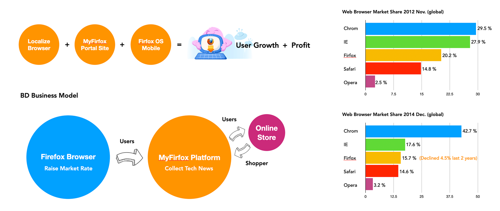
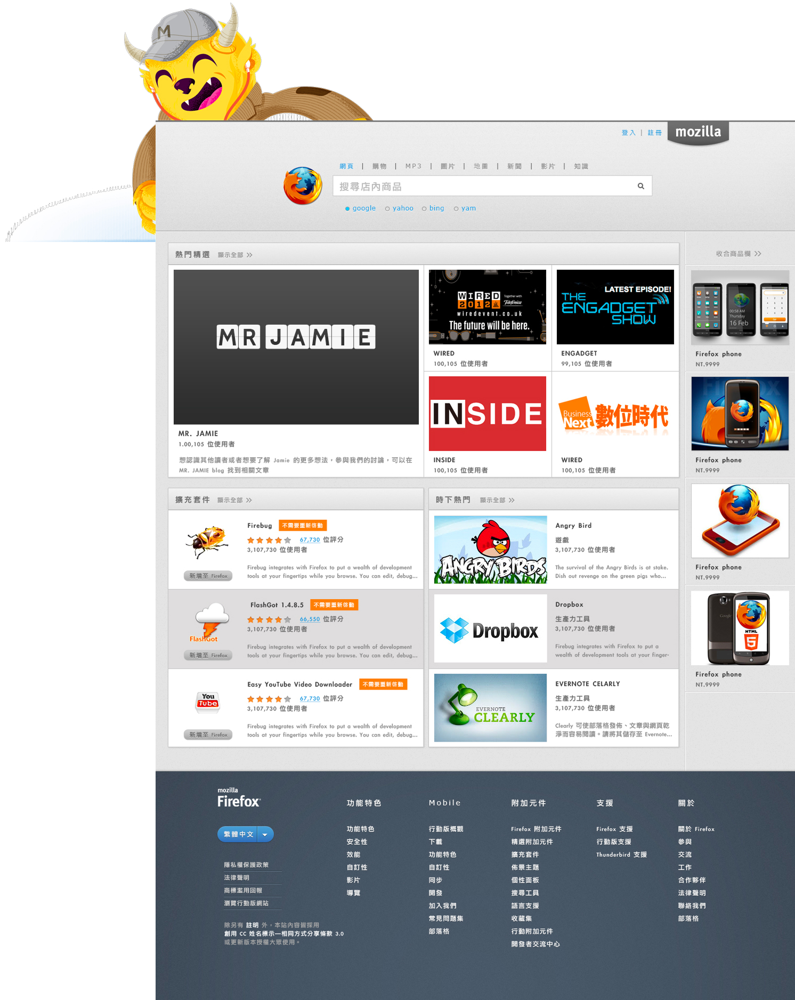
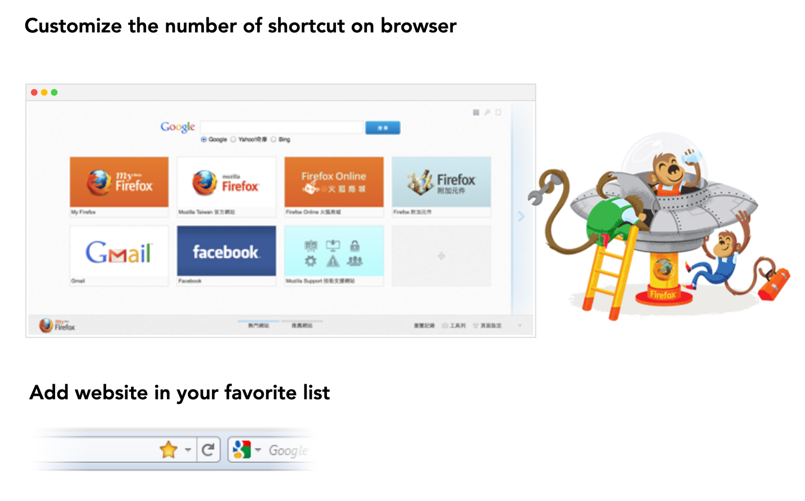
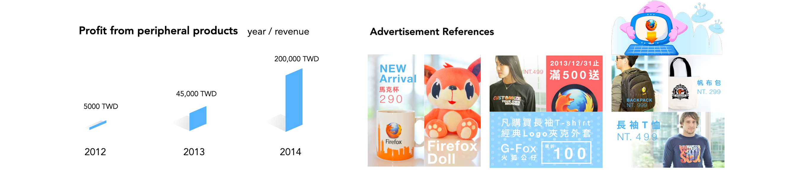

Mozilla: Firefox Localize & MyFirefox Portal
Countering market share decline through localized browser experiences and a content-driven portal, generating over 1.2M TWD in new revenue streams.
My Role
UX/UI Designer, Portal Product Lead, Localized Experience Architect
Project Scope
Browser Customization (Taiwan), MyFirefox Portal Design, E-commerce Integration, Ad Business Model

Faced with intense competition from Google Chrome, Mozilla's global market share was under pressure. In Taiwan, we launched "MyFirefox," a localized portal and browser ecosystem designed to stabilize the user base and explore diversified profit models beyond open-source donations.
Strategic Transformation
We transitioned from a pure tool (Browser) to a lifestyle platform (Portal + Store), creating a closed-loop for user growth and profitability.
| Dimension | The Challenge (2012) | The Solution (2014) |
|---|---|---|
| Market Position | Market share declining (20.2% to 15.7% globally). | Maintained stable market rate in Taiwan through localized features. |
| Business Model | Single revenue stream from search engines. | Diversified profit (Ads + Online Store + Peripheral Products). |
| User Engagement | Low-frequency browser interactions. | High-frequency tech news portal (MyFirefox) engagement. |
The MyFirefox Ecosystem

A centralized platform collecting tech news and open-source community updates to foster user loyalty.

Customizing the Firefox Taiwan edition with pre-installed localized bookmarks and community extensions.
Commercial Success & Impact
By integrating peripheral product stores and advertisement slots, we successfully monetized the Firefox brand presence in Taiwan.

- Revenue Generation: Earned over 1.2M TWD through advertisements and the peripheral online store.
- Growth in Profit: Peripheral product revenue grew from 5K to 200K TWD within two years.
- Community Spirit: Successfully promoted the open-source spirit through merchandise (G-Fox, Apparel, etc.).
Full Case Study
Download the detailed PDF version for more technical insights and methodology details.